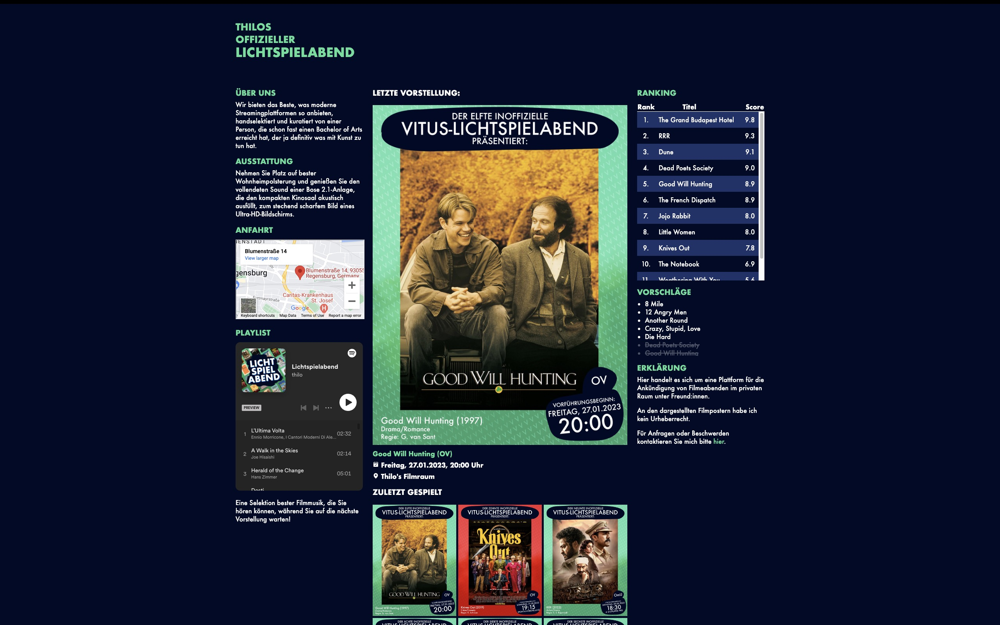

Kinowebseite
Frühling 2022
Hintergrund
Die Homepage meines semi-regelmäßigen Filmeabends.
Hier wird die nächste Vorführung angekündigt und die Bewertungen, die wir den Filmen gegeben haben, können eingesehen werden.
Obwohl es ein privates, nicht-kommerzielles Zusammenkommen ist, hatte ich mich in v1 für Anfahrt und Beschreibung an anderen Kinoseiten orientiert.
Erste Version
Die alte Version war gemäß dem Wohnheim, in dem ich damals lebte, in einem neon-grünen/dunkelblauem Farbschema gehalten,
Aktuell
Nach einem Umzug wurde die Marke modernisiert, an die neue Wohnung angepasst und dann seit einem ersten Filmeabend nicht mehr benutzt — es kann terminlich nur noch besser werden!
Stand jetzt ist die Seite statisch, mit JS werden die Scores und das Ranking berechnet. Eine Version, die dynamisches Hinzufügen von Vorstellungen und Bewertungen unterstützen wird, wäre schön zu haben, falls ich mal dazu komme.